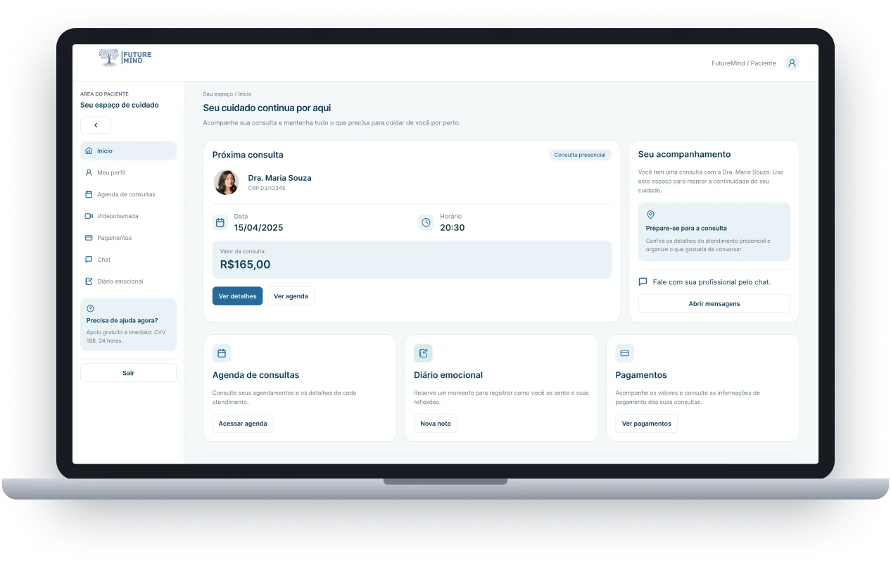
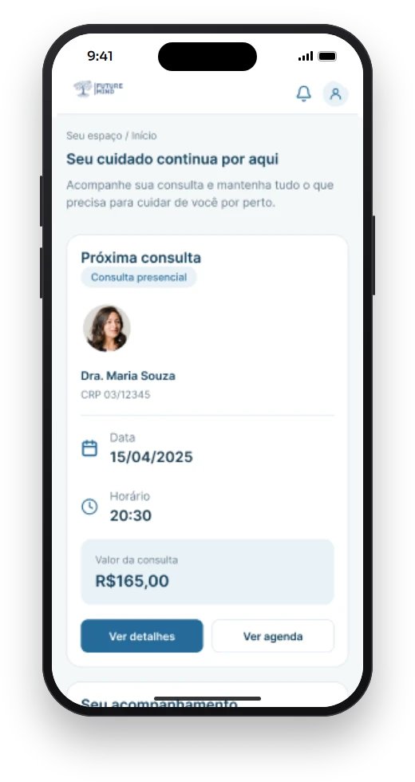
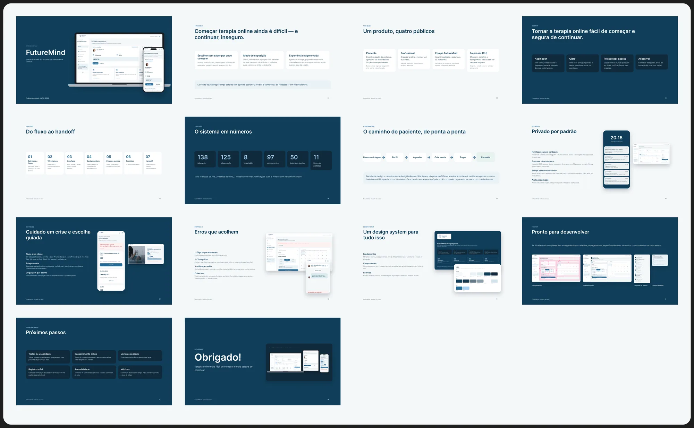

Telas

Paciente, profissional e administração.
Do agendamento à videochamada, a agenda do profissional e o back-office, em desktop, tablet e celular.
Terapia online mais fácil de começar e mais segura de continuar.


Área do paciente: a próxima consulta, o acompanhamento e a ajuda imediata sempre à vista.
Melhor Projeto do Curso de Desenvolvimento de Sistemas (2025/1) e Melhor Situação de Aprendizagem da 3ª fase no SENAI/SC.
Depois de 2020, atender por vídeo virou rotina pra muitos psicólogos e um mercado em expansão. Só que ninguém tinha pensado o consultório online como um produto: cada profissional montava o seu juntando ferramentas que não foram feitas pra isso.
O psicólogo precisava de um site pra ser encontrado, do WhatsApp pra agendar, do Meet pra atender, de planilha pra cobrar e de editor de texto pra emitir recibo. Do outro lado, o paciente não sabia por onde começar.
Perfil, agenda, chamada, cobrança e recibo em sistemas diferentes, sem nada conversando entre si.
O WhatsApp particular virava o canal do consultório, a qualquer hora do dia.
Muitos profissionais e abordagens, preço só no fim e medo de expor que faz terapia.
Um questionário quantitativo com profissionais que atendem online mapeou a rotina, as ferramentas usadas e o que mais trava o dia a dia. Com o protótipo pronto, voltamos pra testar.
Questionário quantitativo sobre rotina, ferramentas e necessidades.
Conversas sobre como escolhem um profissional e o que dá medo.
Testes de usabilidade com tarefas reais no protótipo, algumas cronometradas.
Questionário com 50 psicólogos que atendem online · 2025
“Meu consultório hoje é um link do Meet, um Pix e o meu WhatsApp. Se um falha, a sessão não acontece.”
Psicóloga, 6 anos de atendimento online
Cada público tem uma necessidade diferente, e todos precisam conviver no mesmo sistema sem que um exponha o outro.
Encontrar alguém de confiança, agendar e ser atendido sem fricção e com privacidade.
Organizar a rotina e receber sem burocracia: agenda, pacientes, documentos e repasses.
Garantir qualidade e segurança: aprovação de cadastros, denúncias, suporte e financeiro.
Oferecer o benefício e acompanhar a adesão sem ver dados de ninguém.
Tom calmo, cores suaves e linguagem humana. Ninguém deve se sentir julgado.
Uma ação principal por tela e textos que dizem o que vai acontecer.
Dados clínicos nunca aparecem em listas, notificações ou para terceiros.
Contraste adequado, alvos de toque de 44 px e foco visível.
Mapa das áreas e do caminho de cada público.
Hierarquia e conteúdo validados antes do visual.
Web, mobile e tablet com o mesmo sistema.
Tokens, estilos e componentes documentados.
Vazio, carregando, erro e confirmação em cada tela.
11 fluxos navegáveis.
Especificações, tokens e comportamentos para o dev.
Nos 10 testes de usabilidade, medimos as tarefas principais na primeira e na versão final do protótipo.
"Você tem uma nova mensagem", nunca o texto. A empresa só vê números agregados de grupos com 10 pessoas ou mais. A equipe não acessa conteúdo clínico.
Em todas as telas do paciente, o "Precisa de ajuda agora?" leva direto ao CVV (188), ao chat do CVV e ao SAMU (192). A triagem é curta e sem jargão clínico.
Toda mensagem de erro explica o que aconteceu em linguagem simples, diz o que foi preservado e mostra o próximo passo.
Do agendamento à videochamada, a agenda do profissional e o back-office, em desktop, tablet e celular.

As 14 pranchas do estudo de caso, do problema aos próximos passos.
Foi meu primeiro sistema grande feito a várias mãos. Aprendi a dividir o trabalho, alinhar decisões e defender uma ideia com argumento, não com gosto.
Com 271 telas, sem componentes e tokens não tem como manter a consistência. O design system virou a base de tudo.
Estados, erros e regras escritas no Figma resolveram dúvidas antes de elas chegarem em mim.
Testar de novo triagem, agendamento e pagamento depois dos ajustes, com mais pacientes e psicólogos.
Termo de consentimento antes da primeira sessão e fluxo de autorização do responsável.
Conversão da triagem, tempo até a primeira consulta e taxa de faltas.
Telas, fluxos, estados de erro, design system e handoff, do jeito que foram entregues.
Próximo projeto
SKYNS →